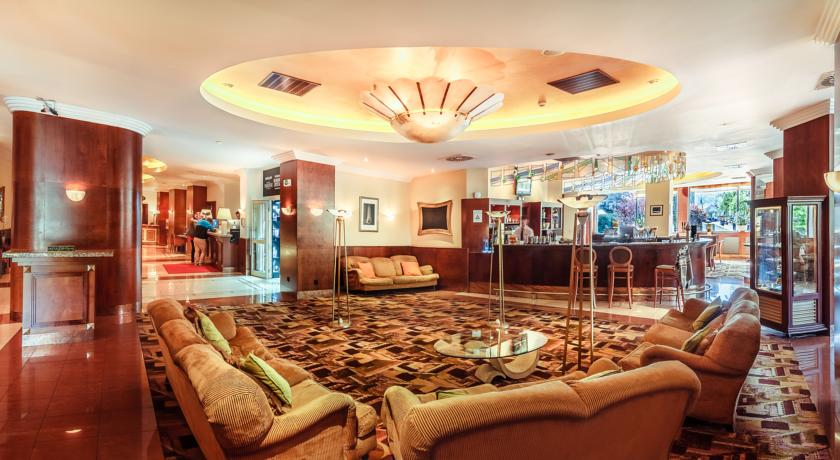
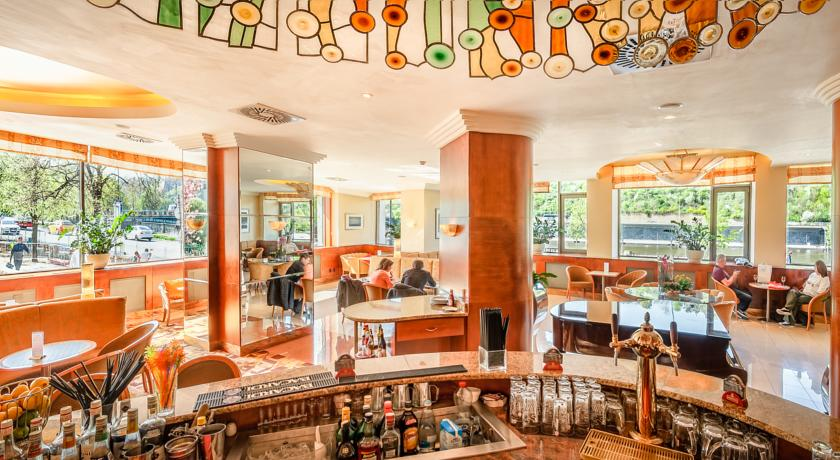

President Hotel



Этот современный отель бизнес-класса расположен на берегу реки Влтавы, в центре Старого города Праги.
Элегантные просторные номера отеля President оснащены кондиционерами. В числе прочих удобств — мини-бар, гостиная зона и спутниковое телевидение. Из окон открывается вид на Пражский Град, реку или Старый город.
По утрам в ресторане отеля накрывают завтрак.
В ресторане Vltava с французскими окнами, из которых открывается панорамный вид на реку, подают блюда интернациональной кухни по чешским рецептам. В баре Piano с живой фортепианной музыкой можно заказать различные коктейли и другие напитки.
За дополнительную плату предоставляются места на охраняемой парковке, которая вмещает до 10 автомобилей. Помимо этого, гости отеля President могут заказать трансфер на лимузине.
Прогулка до Старого города занимает 1 минуту. Отель President находится рядом с Еврейским кварталом и торговой улицей Парижска.
Это любимая часть города Прага среди наших гостей согласно независимым отзывам.
Мы говорим на вашем языке!
President Hotel — принимает гостей с 31 июля 2005
Номеров в отеле: 130